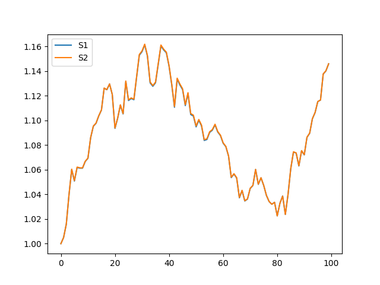
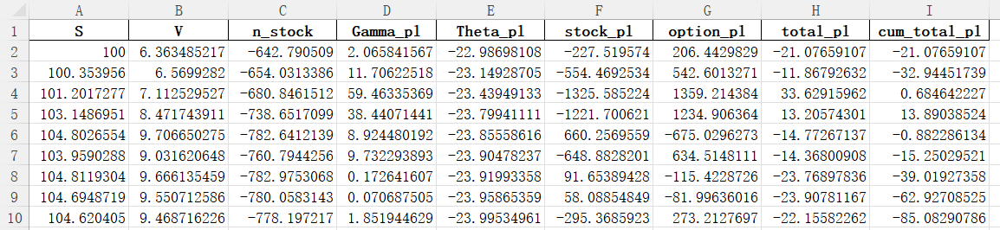
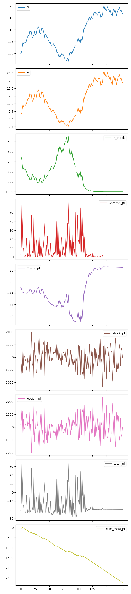
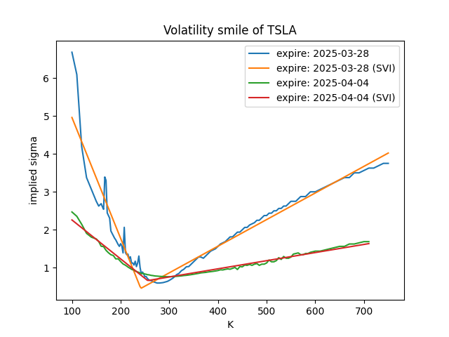
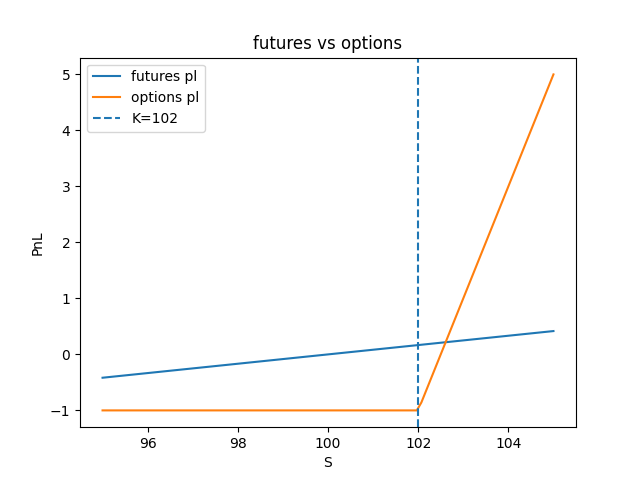

Options
Black-Scholes 模型: 为了回答 "期权应如何公平定价" 这个问题
假设股票价格 $ S(t) $ 的动力学为:
\[
dS = S ( r \; dt + \sigma \; dW_t ) \\[5pt]
\Longrightarrow S(t) = S_0 \exp[ (r - \sigma^2/2) \; t + \sigma W_t ] \quad \text{Ito's calculus}
\]
其中 $ r $: 漂移率, $ \sigma $: 波动率, $ dW_t \sim N(\mu=0, \sigma^2=dt) $: 维纳过程 (标准布朗运动)
假设期权价格 $ V(S, t) $, 构建对冲组合
- 根据 Ito's lemma (相当于带噪声的泰勒展开)
\[
dV = { \partial V \over \partial t } dt
+ { \partial V \over \partial S } dS
+ {1\over 2} {\partial^2 V \over \partial S^2} (dS)^2 \\[5pt]
(dS)^2 = \sigma^2 S^2 dt + O(dt^2) \\[5pt]
\Longrightarrow dV = { \partial V \over \partial t } dt
+ { \partial V \over \partial S } dS
+ {1\over 2} \sigma^2 S^2 { \partial^2 V \over \partial S^2 } dt
\]
- 为了消除 \(dS\) (唯一的随机性来源), 做空 \(1\) 份期权, 买入 $ { \partial V \over \partial S } $ 份股票 (Delta Neutral 对冲), 组合价值为
\[
\Pi = -V + { \partial V \over \partial S } S \\[5pt]
\Longrightarrow d\Pi
= - \left(
{ \partial V \over \partial t }
+ {1\over 2} \sigma^2 S^2 { \partial^2 V \over \partial S^2 }
\right) dt
\]
令 \(\Pi\) 的收益率等于无风险利率 \(r\)
- 无套利原理: BS模型应当给出期权最公平的定价
- 无风险利率 \(r\): 理想中的 银行 借/存 利率
- 若 $ d\Pi > r\Pi dt $, 可借钱并买入组合 \(\Pi\) 实现无风险收益
- 若 $ d\Pi < r\Pi dt $, 可卖出组合 \(\Pi\) 并存钱实现无风险收益
- 仅当 $ d\Pi = r \Pi dt $, 没有无风险套利机会
\[
d\Pi = r \Pi dt \\[5pt]
\Longrightarrow - \left(
{ \partial V \over \partial t }
+ {1\over 2} \sigma^2 S^2 { \partial^2 V \over \partial S^2 }
\right) dt
= r (-V + { \partial V \over \partial S } S) dt \\[5pt]
\text{Black-Scholes: } \boxed{
{ \underbrace{ \partial V \over \partial t }_{ -\Theta } }
+ {1\over 2} \sigma^2 S^2 {
\underbrace{ \partial^2 V \over \partial S^2 }_{ \Gamma }
}
+ rS { \underbrace{ \partial V \over \partial S }_{ \Delta } }
-rV = 0
} \\[5pt]
\boxed{ \nu := { \partial V \over \partial \sigma }
\quad \rho := { \partial V \over \partial r } }
\]
方程的解 (仅思路 无过程)
-
根据期权类型设定边界条件, 通过替换变量转化为热传导方程, 使用积分变换(格林函数法)求解
-
对于欧式看涨期权:
\[
\boxed{ V(S, t) = S \; N(d_1) - K e^{-r \; T} \; N(d_2) } \\[5pt]
d_1 = { \ln(S/K) + (r + \sigma^2 / 2) T \over \sigma \sqrt{ T } } \\[5pt]
d_2 = d_1 - \sigma \sqrt{ T } \\[5pt]
T := T_0 - t \quad \text{ time left }\\[5pt]
N(\cdot) \quad \text{ standard normal CDF } \\[5pt]
\boxed{ \Delta = N(d_1) \quad \Gamma = { N'(d_1) \over S \sigma \sqrt{ T } } \quad \nu = S\sqrt{T} N'(d_1) } \\[5pt]
\boxed{ \Theta = - { S N'(d_1) \sigma \over 2\sqrt{T} } - r K e^{-r T} N(d_2) }
\]
实战题
1. BS 模型计算验证
投资人买进1000张Option, 股价100, 执行价100, 到期日180天, 波动率16%, 一年256天, 利率7％. 假定此Option为Delta Neutral状态. 用python验证BS Model, 求出当股价涨/跌 1% 时, 一日Theta, 总PL.
- 结果
stock: 100 -> 99.0
option: 7.968044763858842 -> 7.284780019739209
stock_pl: 667.8328836634573
option_pl: -683.264744119633
Theta_pl + Delta_pl (-stock_pl) + Gamma_pl: -683.9151768360123
Theta_pl: -29.6140665687756
Gamma_pl: 13.531773396220588
total_pl: -15.431860456175627
stock: 100 -> 101.0
option: 7.968044763858842 -> 8.619186079616412
stock_pl: -667.8328836634573
option_pl: 651.1413157575703
Theta_pl + Delta_pl (-stock_pl) + Gamma_pl: 651.7505904909024
Theta_pl: -29.6140665687756
Gamma_pl: 13.531773396220588
total_pl: -16.69156790588704
- 代码
from numpy import exp, log, sqrt
from scipy.stats import norm
def bs_euro_call(S, K, r, sig, T):
cdf, pdf = norm.cdf, norm.pdf
A = sig * sqrt(T)
d1 = (log(S / K) + (r + sig**2 / 2) * T) / A
d2 = d1 - A
B = K * exp(-r * T) * cdf(d2)
V = S * cdf(d1) - B
Delta = cdf(d1)
Gamma = pdf(d1) / (S * A)
Theta = -(S * pdf(d1) * sig) / (2 * sqrt(T)) - r * B
Vega = S * sqrt(T) * pdf(d1)
return dict(V=V, Delta=Delta, Gamma=Gamma, Theta=Theta, Vega=Vega)
def delta_neutral_step(
S1,
T1,
S2,
T2,
K=100,
r=0.07,
sig=0.16,
n_option=1000,
):
x1 = bs_euro_call(S1, K, r, sig, T1)
n_stock = -x1["Delta"] * n_option
x2 = bs_euro_call(S2, K, r, sig, T2)
Gamma_pl = n_option * 0.5 * x1["Gamma"] * (S2 - S1) ** 2
Theta_pl = n_option * x1["Theta"] * (T1 - T2)
stock_pl = n_stock * (S2 - S1)
option_pl = n_option * (x2["V"] - x1["V"])
total_pl = stock_pl + option_pl
info = f"""
stock: {S1} -> {S2}
option: {x1['V']} -> {x2['V']}
stock_pl: {stock_pl}
option_pl: {option_pl}
Theta_pl + Delta_pl (-stock_pl) + Gamma_pl: {Theta_pl - stock_pl + Gamma_pl}
Theta_pl: {Theta_pl}
Gamma_pl: {Gamma_pl}
total_pl: {total_pl}
"""
return dict(
S=S1,
V=x1["V"],
n_stock=n_stock,
Gamma_pl=Gamma_pl,
Theta_pl=Theta_pl,
stock_pl=stock_pl,
option_pl=option_pl,
total_pl=total_pl,
info=info,
)
if __name__ == "__main__":
S1, T1, T2 = 100, 180 / 256, (180 - 1) / 256
for change in [-0.01, 0.01]:
S2 = S1 * (1 + change)
res = delta_neutral_step(S1, T1, S2, T2)
print(res["info"])
2a. 计算股价布朗运动的两种方法
- 结果

- 代码
import matplotlib.pyplot as plt
import numpy as np
def stock_price1(S0, num, dt, r, sig):
S = np.zeros(num)
S[0] = S0
dW = np.random.normal(0, np.sqrt(dt), num)
for i in range(1, num):
dS = S[i - 1] * (r * dt + sig * dW[i])
S[i] = S[i - 1] + dS
return S
def stock_price2(S0, num, dt, r, sig):
t = np.arange(num) * dt
dW = np.random.normal(0, np.sqrt(dt), num)
dW[0] = 0
return S0 * np.exp((r - sig**2 / 2) * t + sig * np.cumsum(dW))
if __name__ == "__main__":
S0, num, dt, r, sig = 1, 100, 0.01, 0.1, 0.1
np.random.seed(0)
S1 = stock_price1(S0, num, dt, r, sig)
np.random.seed(0)
S2 = stock_price2(S0, num, dt, r, sig)
plt.plot(S1, label="S1")
plt.plot(S2, label="S2")
plt.legend()
plt.savefig("question2a")
2b. 动态 Delta 对冲
股价100, 执行价100, 到期日180天, 波动率16%, 一年360天, 利率7％, 买入1000张Option, 避险频率为1天。用python模拟BS Model下Option的Dynamic Delta Hedge过程.
-
结果1: 单次模拟
- excel 文件
- 
S: 股票价格, 由 几何布朗运动 生成V: 期权价格 (欧式看涨), 由股票价格以及 BS 公式算出n_stock: (做空) 对冲的股票数量 (由于买入了欧式看涨期权)Gamma_pl: \(\Gamma\) 效应的每日收益Theta_pl: \(\Theta\) 效应的每日收益stock_pl: 每日股票价格变化带来的收益option_pl: 每日期权价格变化带来的收益total_pl: 每日总收益total_pl = stock_pl + option_pl- 可以看出, 这一项绝对值远小于股票/期权收益的绝对值, 体现了对冲
cum_total_pl: 累计总收益cum_total_pl = cumsum(total_pl)- 
-
结果2: 多次模拟, 不考虑期权每日收益, 而是看期权的最终执行
股票对冲累计收益: -13177.827686668968
买入期权的成本: -6363.485217326122
期权到期执行带来的收益: 16783.48316247069
最终总收益: -2757.8297415244015
股票对冲累计收益: -10509.726762807535
买入期权的成本: -6363.485217326122
期权到期执行带来的收益: 13973.358289900432
最终总收益: -2899.853690233227
股票对冲累计收益: 4262.71837293126
买入期权的成本: -6363.485217326122
期权到期执行带来的收益: 1694.855159339852
最终总收益: -405.91168505501037
股票对冲累计收益: 5525.898204087093
买入期权的成本: -6363.485217326122
期权到期执行带来的收益: 0
最终总收益: -837.5870132390291
股票对冲累计收益: -8050.688607611437
买入期权的成本: -6363.485217326122
期权到期执行带来的收益: 11540.995496282576
最终总收益: -2873.1783286549835
- 代码
import matplotlib.pyplot as plt
import numpy as np
import pandas as pd
from question1 import delta_neutral_step
from question2a import stock_price2
def dynamic_delta_hedging(
S0=100,
days=180,
DAYS=360,
K=100,
r=0.07,
sig=0.16,
n_option=1000,
):
dt = 1 / DAYS
S = stock_price2(S0, days, dt, r, sig)
results = []
for i in range(days - 1):
S1, S2 = S[i], S[i + 1]
T1 = (days - i) / DAYS
T2 = (days - (i + 1)) / DAYS
x = delta_neutral_step(S1, T1, S2, T2, K, r, sig, n_option)
results.append(x)
df = pd.DataFrame(results).select_dtypes(include=["number"])
df["cum_total_pl"] = df["total_pl"].cumsum()
df["cum_stock_pl"] = df["stock_pl"].cumsum()
R, C = df.shape
df.plot(subplots=True, figsize=(6, 3 * C))
plt.tight_layout()
plt.savefig("question2b")
df.to_excel("dynamic_delta_hedging.xlsx", index=False)
stock_pl2 = df["stock_pl"].sum()
option_pl0 = -df["V"].iat[0] * n_option
option_pl2 = max(S[-1] - K, 0) * n_option
final_pl = stock_pl2 + option_pl0 + option_pl2
print(f"股票对冲累计收益: {stock_pl2}")
print(f"买入期权的成本: {option_pl0}")
print(f"期权到期执行带来的收益: {option_pl2}")
print(f"最终总收益: {final_pl}")
if __name__ == "__main__":
for seed in range(5):
np.random.seed(seed)
dynamic_delta_hedging()
print()
3、4. Greeks与 \(\sigma, T\) 的关系
\(\sigma , T\) 与Greeks, 呈何种关系? (用公式说明)
- 结果: 由以下公式可以看出它们的关系, 比起定性描述, 我认为直接画图直观理解更合理. \(\sigma\) 左图, \(T\) 右图
\[
\boxed{ V(S, t) = S \; N(d_1) - K e^{-r \; T} \; N(d_2) } \\[5pt]
d_1 = { \ln(S/K) + (r + \sigma^2 / 2) T \over \sigma \sqrt{ T } } \\[5pt]
d_2 = d_1 - \sigma \sqrt{ T } \\[5pt]
T := T_0 - t \quad \text{ time left }\\[5pt]
N(\cdot) \quad \text{ standard normal CDF } \\[5pt]
\boxed{ \Delta = N(d_1) \quad \Gamma = { N'(d_1) \over S \sigma \sqrt{ T } } \quad \nu = S\sqrt{T} N'(d_1) } \\[5pt]
\boxed{ \Theta = - { S N'(d_1) \sigma \over 2\sqrt{T} } - r K e^{-r T} N(d_2) }
\]


- 代码
import matplotlib.pyplot as plt
import numpy as np
from question1 import bs_euro_call
def greeks_vs_sigma():
K, r, T = 100, 0.07, 0.5
sig_arr = np.linspace(0.01, 0.3, 100)
keys = ["Delta", "Gamma", "Vega", "Theta"]
plt.figure(figsize=(6, 3 * len(keys)))
for i, k in enumerate(keys):
plt.subplot(len(keys), 1, i + 1)
plt.title(f"{k} VS sigma")
for ratio in [0.8, 1, 1.2]:
S = ratio * K
Y = [bs_euro_call(S, K, r, sig, T)[k] for sig in sig_arr]
plt.plot(sig_arr, Y, label=f"S = {ratio} * K")
plt.legend()
plt.tight_layout()
plt.savefig("question3")
def greeks_vs_T():
K, r, sig = 100, 0.07, 0.16
T_arr = np.linspace(0.01, 1, 100)
keys = ["Delta", "Gamma", "Vega", "Theta"]
plt.figure(figsize=(6, 3 * len(keys)))
for i, k in enumerate(keys):
plt.subplot(len(keys), 1, i + 1)
plt.title(f"{k} VS T")
for ratio in [0.8, 1, 1.2]:
S = ratio * K
Y = [bs_euro_call(S, K, r, sig, T)[k] for T in T_arr]
plt.plot(T_arr, Y, label=f"S = {ratio} * K")
plt.legend()
plt.tight_layout()
plt.savefig("question4")
if __name__ == "__main__":
greeks_vs_sigma()
greeks_vs_T()
5. 波动率微笑
产生Volatility Smile的原因有哪些?
- 结果
- 首先根据真实数据画图理解 Volatility Smile, 并进行了 SVI (Stochastic Volatility Inspired) 模型拟合
- Black-Scholes 假设缺陷
- BS模型假设波动率 $ \sigma $ 为常数，但实际市场中：
- 极端价格运动（肥尾：真实资产回报分布呈现肥尾（如崩盘/暴涨），BS对数正态假设低估尾部风险 → 深度实值/虚值期权需更高 $ \sigma $ 定价。
- 跳跃风险：资产价格存在突发跳跃（如财报发布、黑天鹅事件），连续扩散假设失效 → 虚值期权隐含波动率上升。
- BS模型假设波动率 $ \sigma $ 为常数，但实际市场中：
- 市场供需动态
- 恐慌不对称性：投资者对下跌恐慌（虚值看跌期权需求激增）＞ 上涨投机（虚值看涨），推高OTM Put的隐含波动率。
- 对冲压力：做市商对冲OTM期权需动态调整头寸，放大市场波动，反哺 $ \sigma $。
- 流动性分层
- 深度实值/虚值期权流动性差 → 买卖价差扩大 → 通过BS公式反推 $ \sigma $ 时人为抬高。
- 总结
- 模型缺陷（肥尾/跳跃）→ 市场行为（恐慌/对冲）→ 流动性反馈 → 隐含波动率曲线扭曲为Smile。

- 代码
import matplotlib.pyplot as plt
import numpy as np
import pandas as pd
import yfinance as yf
from scipy.optimize import minimize
def SVI(K, params):
a, b, rho, m, sigma = params
dK = K - m
return a + b * (rho * dK + np.sqrt(dK**2 + sigma**2))
def find_SVI_params(K, IV):
def obj(x):
return np.sum((SVI(K, x) - IV) ** 2)
x0 = [0.1, 0.1, -0.5, 0.0, 0.1]
bounds = [(0, None), (0, None), (-1, 1), (None, None), (0.01, None)]
return minimize(obj, x0, bounds=bounds).x
def get_option_data(ticker="TSLA", n_expiry=2):
x = yf.Ticker(ticker)
for date in x.options[:n_expiry]:
df: pd.DataFrame = x.option_chain(date).calls
K = df["strike"]
IV = df["impliedVolatility"]
params = find_SVI_params(K, IV)
sig = SVI(K, params)
plt.plot(K, IV, label=f"expire: {date}")
plt.plot(K, sig, label=f"expire: {date} (SVI)")
plt.title(f"Volatility smile of {ticker}")
plt.xlabel("K")
plt.ylabel("implied sigma")
plt.legend()
plt.savefig("question5")
if __name__ == "__main__":
get_option_data()
6. BS模型的基本理解
假设Option的定价波动率35%, 无风险利率3%, 到期时已实现的波动率亦为35%, 则在BS的假设下复制Option, 求此投资组合的报酬率。(请写出具体证明公式)
- 结果
- 报酬率 = 无风险利率 = 3%
- 在本页最上面的 BS 理论推导中, $ d\Pi = r \Pi dt $ 是 BS 定价理论的基本假设/要求, 无需证明.
7. Delta Neutral 的风险
投资人卖出Option 并采取Delta Neutral策略, 可能有哪些因素导致其风险无法完全对冲?
- 结果
- Gamma风险: Delta随标的资产价格非线性变化（二阶效应），快速波动时对冲滞后。
- Vega风险: 隐含波动率变化影响期权价值，Delta对冲不覆盖此风险。
- 时间衰减（Theta）: 时间流逝对期权卖方有利，但需动态调整对冲频率与成本平衡。
- 流动性风险: 标的资产或期权流动性不足导致无法及时调整头寸。
- 跳空缺口: 价格不连续变动（如财报发布）使瞬时Delta失效。
- 利率与股息变化: 影响期权定价因子，尤其对长期期权显著。
- 交易成本: 频繁调仓损耗利润，降低对冲精度。
- 相关性风险（组合对冲时）: 对冲资产与标的实际相关性偏离预期。
- 核心矛盾：Delta仅为一阶近似，而市场是多因子动态系统。
8. 看涨 vs 看跌
大部分市场中, Call的隐含波动率通常较Put低, 原因可能是?
- 结果
- 需求失衡：市场参与者更倾向于购买Put对冲下行风险，推高Put溢价（隐含波动率上升）。Call的买方（投机者）可能因成本敏感而压低需求。
- 杠杆偏好：投机者更倾向直接买股票或期货（而非Call）获取杠杆，减少Call的波动率溢价。
- 市场情绪：恐慌情绪（如尾部风险担忧）对Put的需求影响更不对称。
- 卖压差异：做市商卖出Call时对冲成本更低（如通过持有正股），导致Call供给弹性更大。
- 隐含波动率差异本质反映供需不平衡，而非模型本身特性
9. 期货 vs 期权
明天为标的期货结算日, 投资人预期该标的将涨2%, 为使报酬率最大, 会选择期货还是期权?
- 结果
- 对可能的情况进行画图
- 为了最大化收益, 应选择options, 因为options杠杆更大 (但潜在风险也更大)

- 代码
import matplotlib.pyplot as plt
import numpy as np
def futures_vs_options(
S0=100, # 当前标的资产价格
K=102, # 虚值看涨期权行权价（预期涨2%）
margin_ratio=0.12, # 期货保证金比例（12%）
V=0.5, # 虚值期权权利金（0.5% of S0）
):
# 标的结算价范围：-5%到+5%
S = S0 * (1 + np.linspace(-0.05, 0.05, 100))
futures_pl = (S - S0) / (margin_ratio * S0)
option_pl = (np.maximum(S - K, 0) - V) / V
plt.plot(S, futures_pl, label="futures pl")
plt.plot(S, option_pl, label="options pl")
plt.axvline(K, linestyle="--", label="K=102")
plt.xlabel("S")
plt.ylabel("PnL")
plt.title("futures vs options")
plt.legend()
plt.savefig("question9")
if __name__ == "__main__":
futures_vs_options()